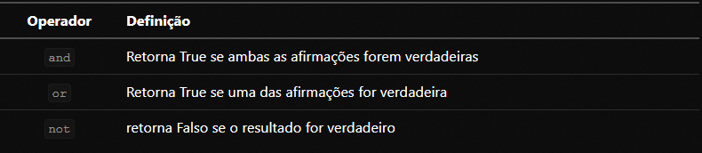
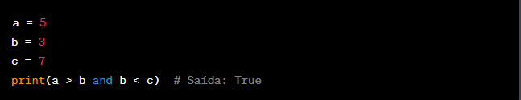
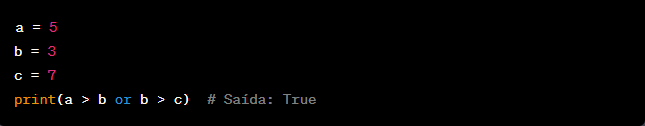
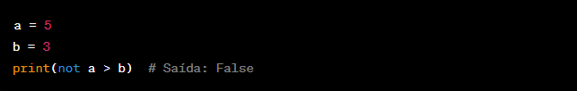
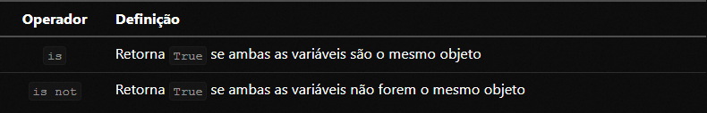
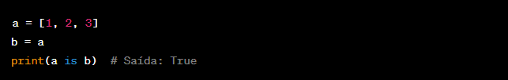
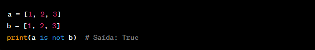
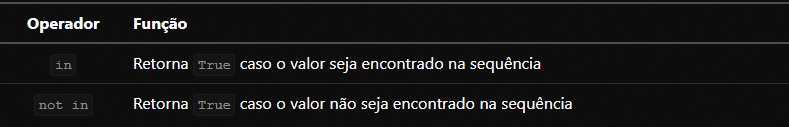
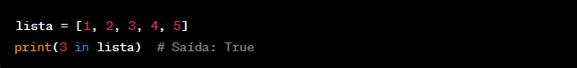
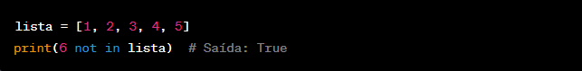

◉ Operadores lógicos
➤ Os operadores lógicos do Python são utilizados para combinar ou negar expressões lógicas e retornar
um resultado booleano (verdadeiro ou falso). Eles permitem construir expressões lógicas mais complexas
e realizar testes condicionais com base em múltiplas condições. Os principais operadores lógicos do Python são:

E lógico (and): Retorna verdadeiro se ambas as expressões lógicas forem verdadeiras.
Exemplo:

Ou lógico (or): Retorna verdadeiro se pelo menos uma das expressões lógicas for verdadeira.
Exemplo:

Não lógico (not): Inverte o valor da expressão lógica, retornando verdadeiro se a expressão original for falsa e vice-versa.
Exemplo:

◉ Operadores de identidade
➤ Os operadores de identidade do Python são utilizados para comparar a identidade de objetos,
ou seja, se dois objetos se referem ao mesmo local de memória. Eles retornam um valor booleano
(verdadeiro ou falso) com base na comparação da identidade dos objetos. Os operadores de identidade no Python são:

É (is): Retorna verdadeiro se dois objetos têm a mesma identidade, ou seja, se eles são o mesmo objeto.
Exemplo:

Não é (is not): Retorna verdadeiro se dois objetos têm identidades diferentes, ou seja, se eles não são o mesmo objeto.
Exemplo:

◉ Operadores de associação
Os operadores de associação são utilizados para verificar se um valor está presente em uma sequência,
como uma lista, uma tupla ou um conjunto. Eles retornam um valor booleano (verdadeiro ou falso) com base
na verificação de associação do valor com a sequência. Os operadores de pertencimento no Python são:

Pertence a (in): Retorna verdadeiro se o valor está presente na sequência.
Exemplo:

Não pertence a (not in): Retorna verdadeiro se o valor não está presente na sequência.
Exemplo:
